BitStat2
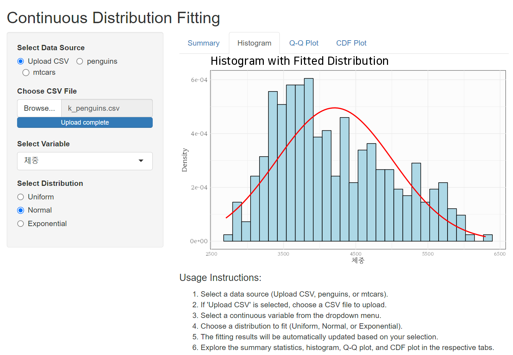
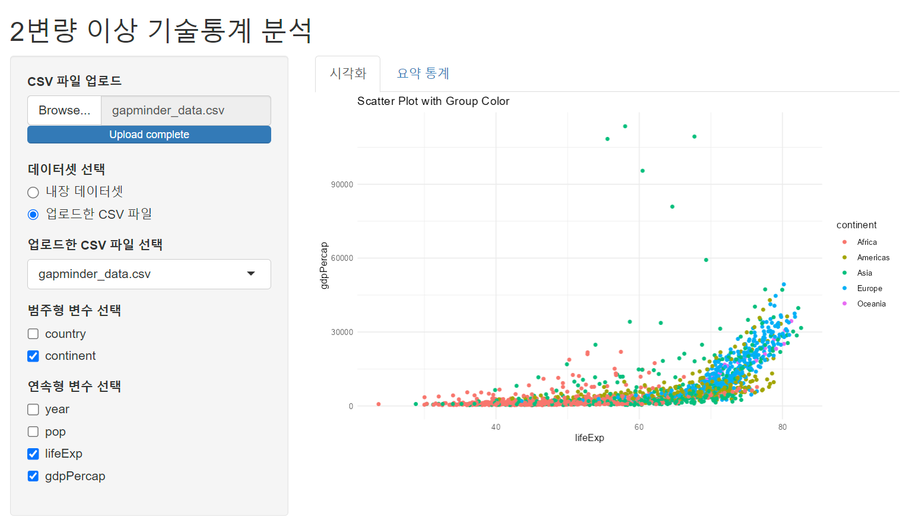
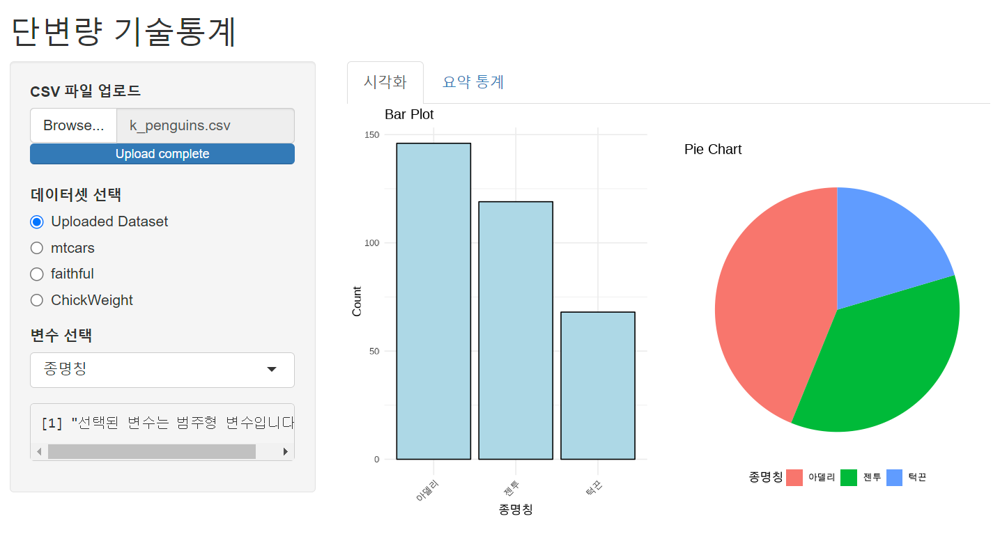
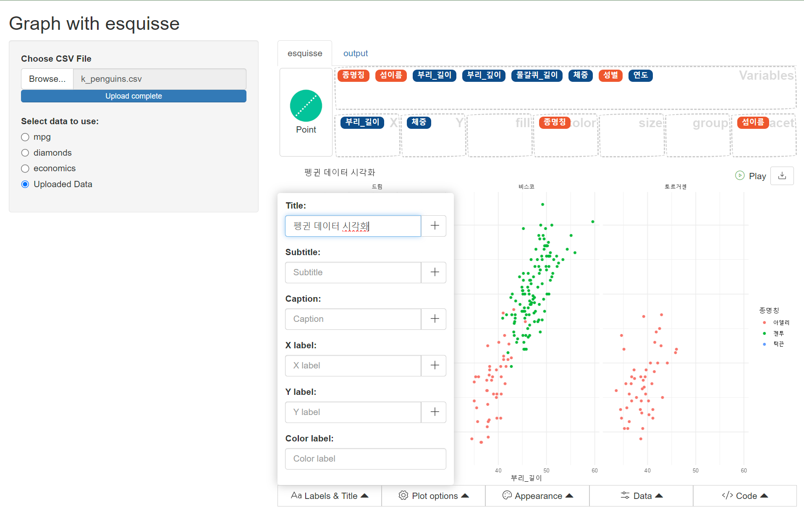
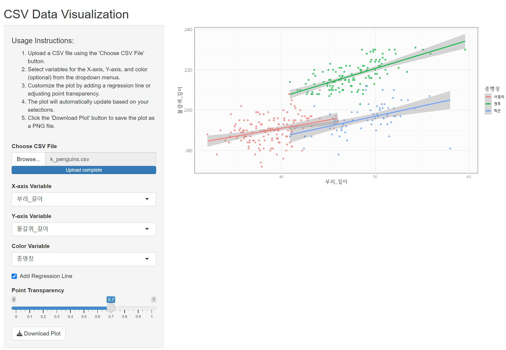
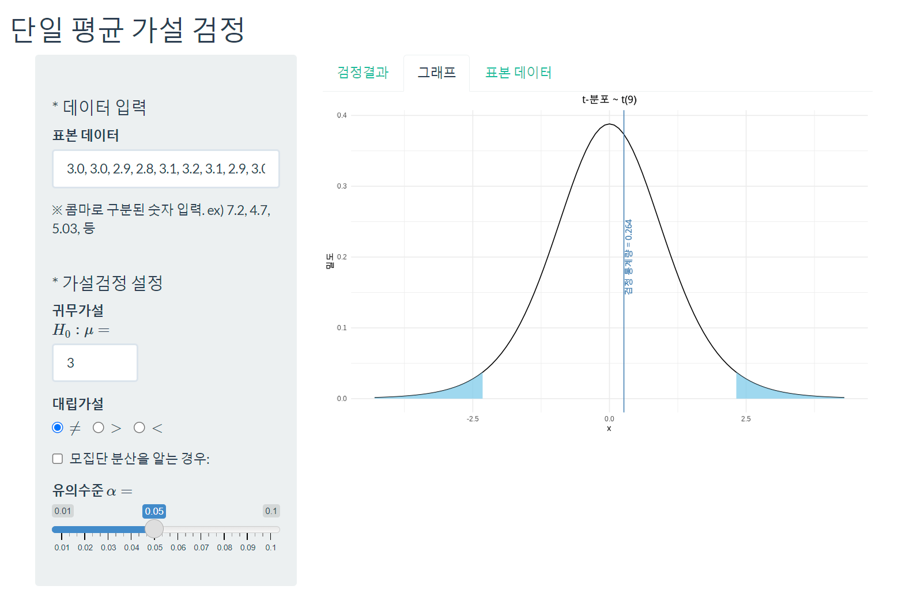
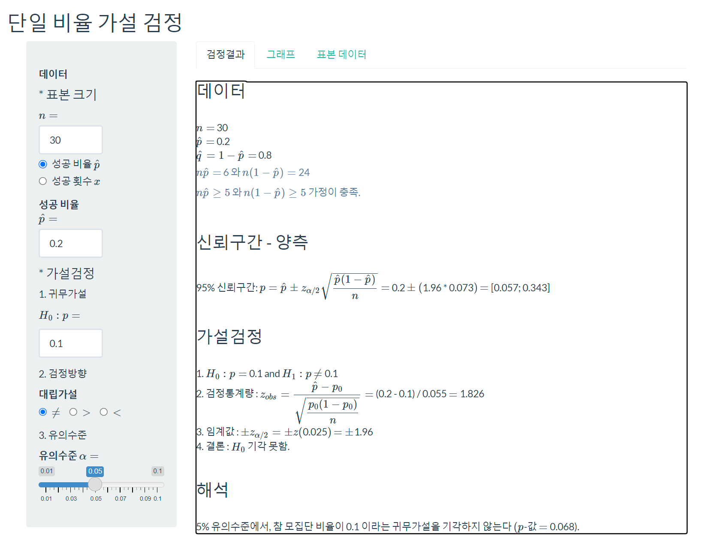
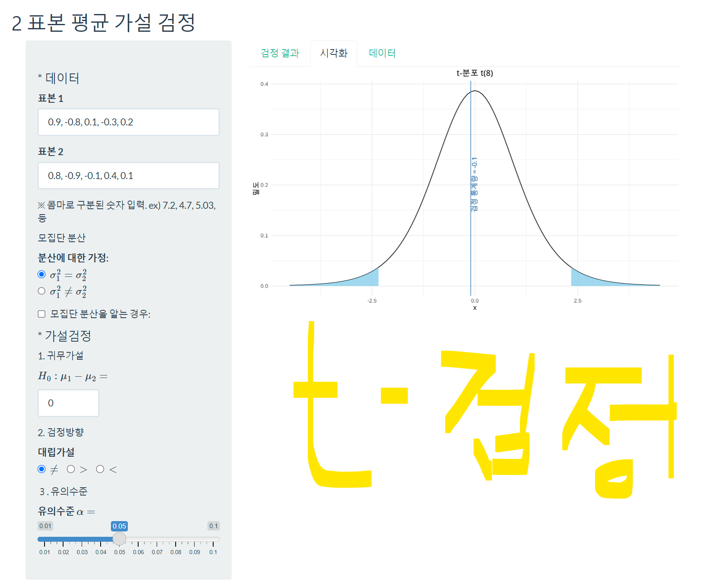
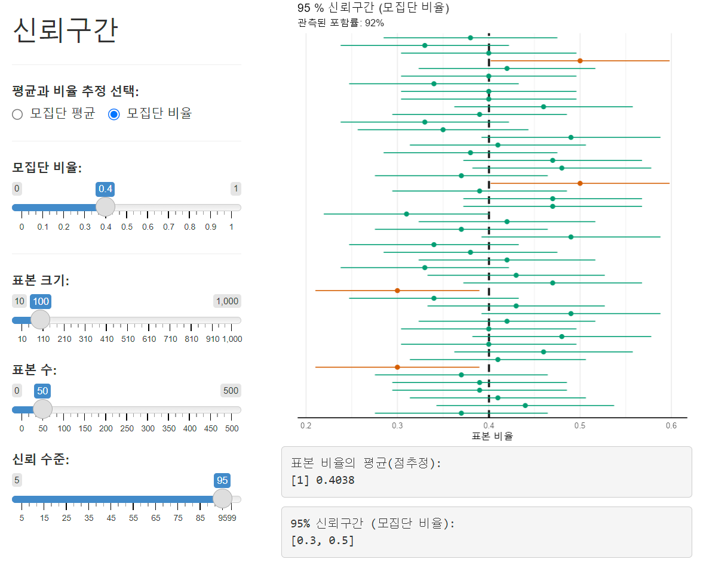
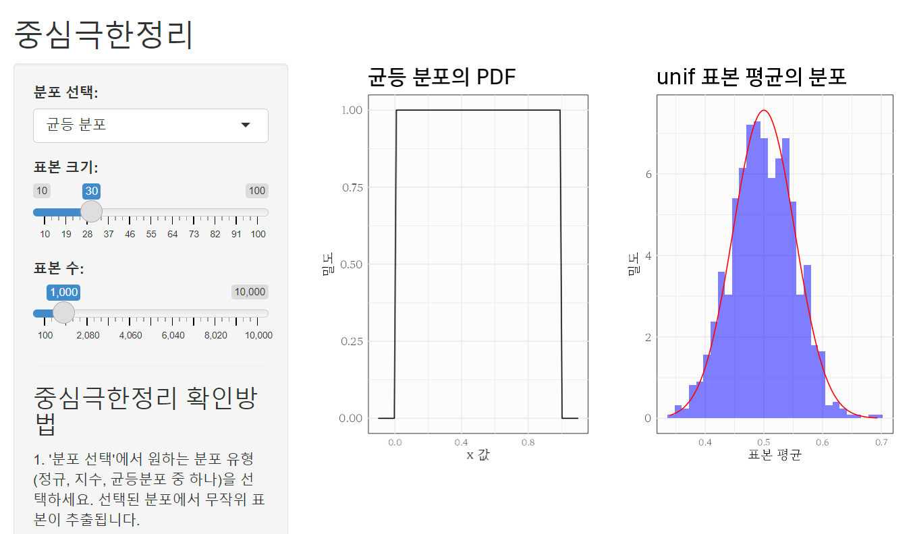
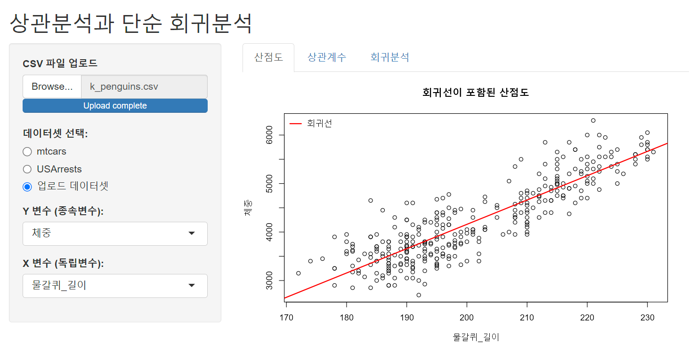
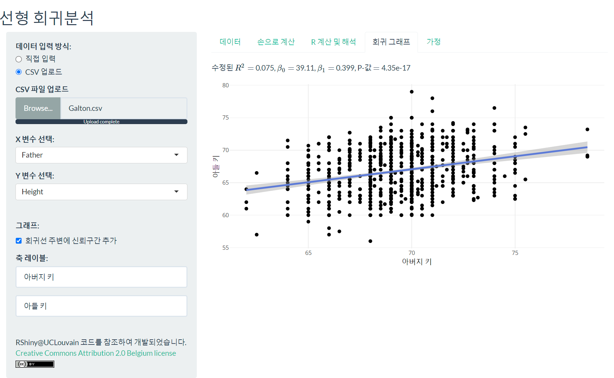
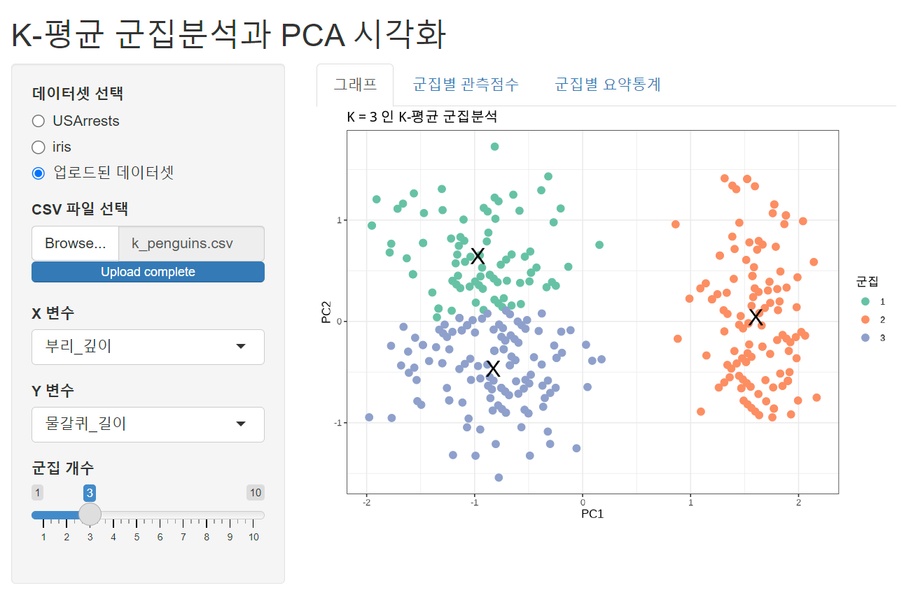
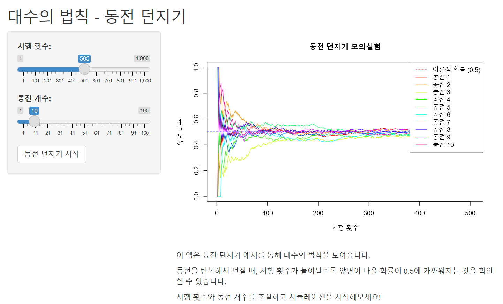
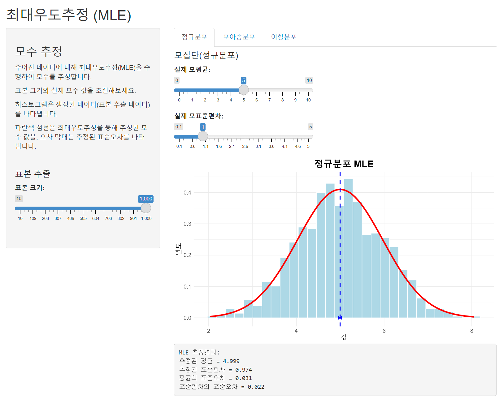
--- title: "오픈 통계 패키지" subtitle: "BitStat2" fig-format: svg editor: markdown: wrap: 72 format: html: code-fold: false code-tools: true listing: - id: stat-data max-items: 3 contents: - pages/01_data sort: "date-modified desc" type: grid image-placeholder: assets/BitStat.png - id: stat-eda max-items: 3 contents: - pages/02_eda sort: "date-modified desc" type: grid image-placeholder: assets/BitStat.png - id: stat-viz max-items: 3 contents: - pages/03_viz sort: "date-modified desc" type: grid image-placeholder: assets/BitStat.png - id: stat-testing max-items: 3 contents: - pages/04_testing sort: "date-modified desc" type: grid image-placeholder: assets/BitStat.png - id: stat-infer max-items: 3 contents: - pages/05_infer sort: "date-modified desc" type: grid image-placeholder: assets/BitStat.png - id: stat-reg max-items: 3 contents: - pages/06_reg sort: "date-modified desc" type: grid image-placeholder: assets/BitStat.png - id: stat-theory max-items: 3 contents: - pages/07_theory sort: "date-modified desc" type: grid image-placeholder: assets/BitStat.png --- # [데이터](pages/01_data.qmd) ::: {#stat-data} ::: # [EDA](pages/02_eda.qmd) ::: {#stat-eda} ::: # [시각화](pages/03_viz.qmd) ::: {#stat-viz} ::: # [통계검정](pages/04_testing.qmd) ::: {#stat-testing} ::: # [추론](pages/05_infer.qmd) ::: {#stat-infer} ::: # [회귀분석](pages/06_reg.qmd) ::: {#stat-reg} ::: # [이론](pages/07_theory.qmd) ::: {#stat-theory} :::